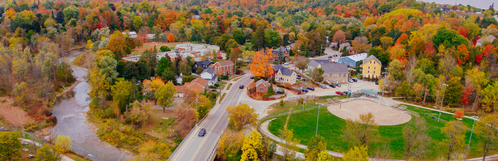
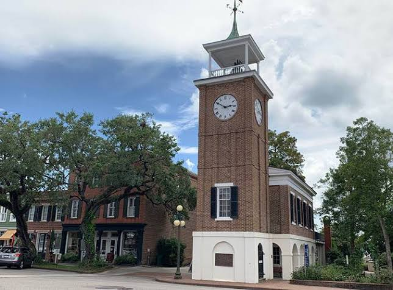

Honouring history while planning the future.
Halton Hills is not just one place. It is a collection of historic communities, rural landscapes, main streets, farms, trails, and families connected by a shared future.

Acton, Georgetown, Glen Williams, Norval, Hornby, Stewarttown, and rural Halton Hills.
The Town of Halton Hills is made up of distinct communities, each with its own identity. Good municipal leadership should respect that local character while improving shared services.
Halton Hills’ sustainability vision speaks to balancing economic prosperity with environmental commitment, viable agriculture, small-town feel, social equity, culture, and strong connections. This campaign design uses that same green, calm, community-first direction.
Treaty 19 period
After Treaty 19, European settlement expanded in the area now known as Halton Hills. Add an Indigenous land acknowledgement approved by the campaign before launch.
Early villages grow
Acton, Georgetown, Glen Williams, and nearby communities developed through mills, skilled trades, farming, commerce, and local institutions.
Town of Halton Hills forms
Halton Hills was incorporated through the amalgamation of Acton, Georgetown, and Esquesing Township.
Acton and Glen Williams 200
Acton and Glen Williams marked bicentennial celebrations, showing how deeply heritage still shapes the town’s identity.
Ours. Halton Hills.
